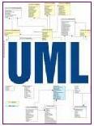

Advertisements
Copyright © tutorialspoint.com
|  |
UML is a standard language for specifying, visualizing, constructing, and documenting the artifacts of software systems. UML was created by Object Management Group and UML 1.0 specification draft was proposed to the OMG in January 1997. This tutorial gives a complete understanding on UML. Send your feedback using Contact Us Form |
A quick UML reference guide for UML Engineers.
A collection of UML Sites, Books and Articles is given at this page.
Here you will find a useful UML's tools and utilities which you will require very frequently while doing UML modeling.
Measure your knowledge by going through simple but tricky UML questions from the whole tutorial.
Download a quick Servlets tutorial in UML format.
Copyright © tutorialspoint.com